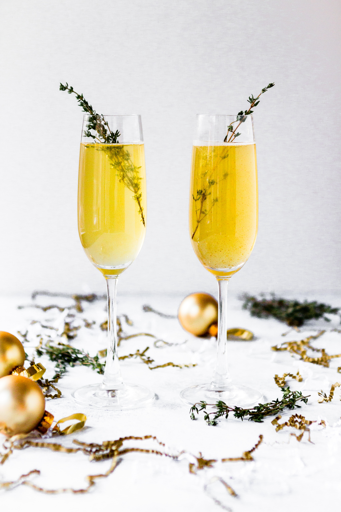

Don't we love a sweet cold cocktail! This is a secret recipe to making a
cider cocktail.
- 60ml (Double shoy) southern comfort
- 180ml (about 3/4 cup) Tusker Cider
- Apple Juice or (Ginger Ale)
- Apple Slices
- Sticks of cinammon
- Sprig of thyme
Directions:-
-
Before beginning, ensure that the Tusker Cider and the Apple Juice are
well chilled so that you dont have to add ice cubes.
-
In a short glass add in the Southern Comfort followed by the chilled
Tusker Cider.
- Top up the glass with Apple Juice (or Ginger Ale if using).
-
Garnish with slices of quartered apple, a stick of cinnamon and a sprig
of fresh thyme.
- Serve immediately
